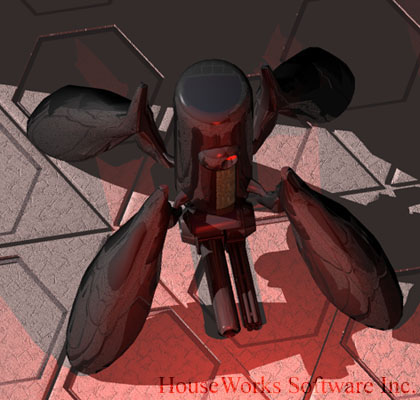

Here are some of characters from HouseWorks' "Enemy Beyond", a first person perspective 3-D shooting game. Unfortunately, the project was not completed. As of 1995, the game had some very interesting features: cat walk, tunnel, 4-D maze, fake motion blur, etc.